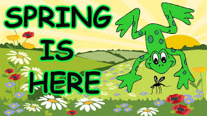
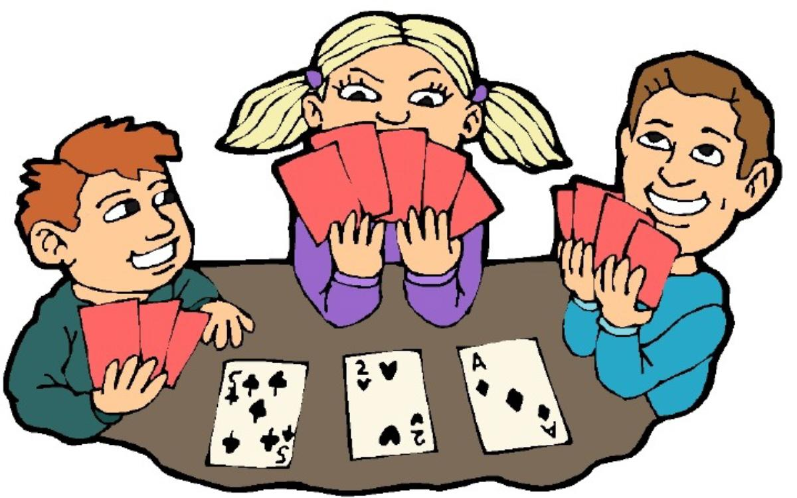
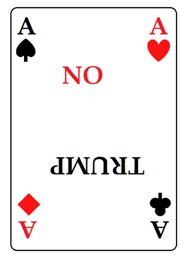
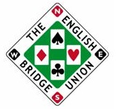
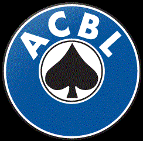

| / | Statesboro Pairs |  |
We are attempting to play a match event
this Tuesday. There will be two teams with 4 pairs each.
A third table is also playing regular BBO.
We are meeting as usual, on-line, at 7:00 pm, Tuesday. Start your table for 2 or 4 players,
After the virus, we will meet in the Episcopal Church
on Veterans Parkway in Statesboro, Georgia.
The McLean's are inviting you to join them (virtually) at 3:00 Sunday for
entering everyone's BBO login names. We are playing 18 boards.
If you need help, call Chuck or Bruce. Call Bruce with your IMP scores at 678-6344.
a bridge game of 12 boards.
Feel free to forward this to anyone
that is already comfortable with BBO.

| Play free on-line 4 games of solitaire. No registration required. All bids explained (SAYC). |
 |  |  |
Recent results |
Most recent winners |
|
Statesboro Pairs Sunday Afternoon Session May24, 2020
Regular scoring (party bridge) after 12 boards Average: 2018 |
My number is 678-6344